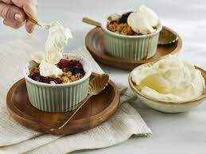

Warme fruitcrumble met crème fraîche
Warme fruitcrumble met crème fraîche kan is een super lekkere nagerecht of als een tussendoortje.
Ingrediënten
- 150 gram havermoutvlokken
- 1 snufje kardemompoeder
- 4 eetlepels rietsuiker
- 100 gram Melkan roomboter ongezouten (koud, in blokjes)
- 2 peren (geschild, in blokjes)
- 100 gram diepvriesbosvruchten
- 0.5 citroen (rasp)
- 200 gram Melkan crème fraîche
- 1 eetlepel poedersuiker
Bereidingswijze
- Meng de havermout met de kardemom, suiker en een snufje zout in een kom. Kneed met een koele hand de boter erdoor tot een kruimelig deeg. Zet in de koelkast.
- Verwarm de oven voor op 180ºC. Meng de stukjes peer met de bosvruchten en citroenrasp en verdeel over de ovenschaaltjes. Verdeel het kruimeldeeg erover en bak in het midden van de oven in circa 25 minuten goudgeel.
- Klop intussen met een elektrische mixer de crème fraîche met de poedersuiker luchtig en stevig. Serveer de warme crumble direct uit de oven met een royale lepel crème fraîche.

Tip Lekker met wat extra tropisch fruit.